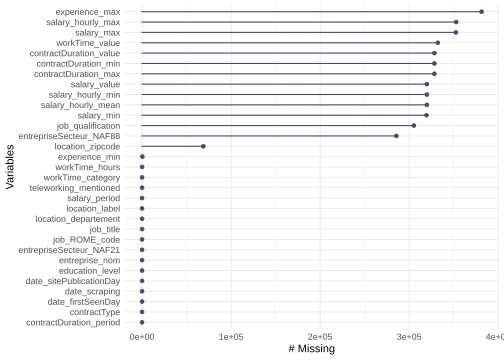
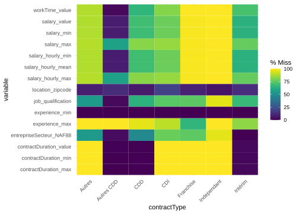
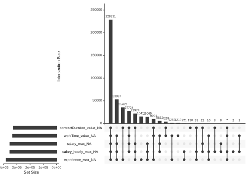
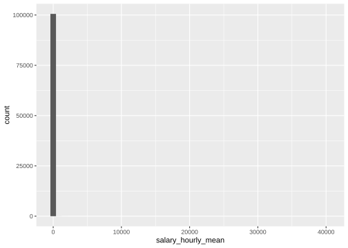
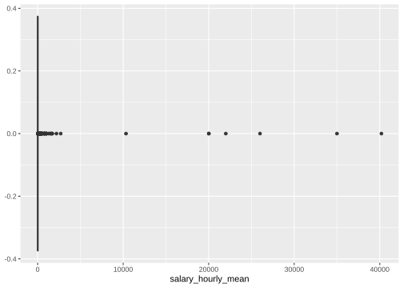
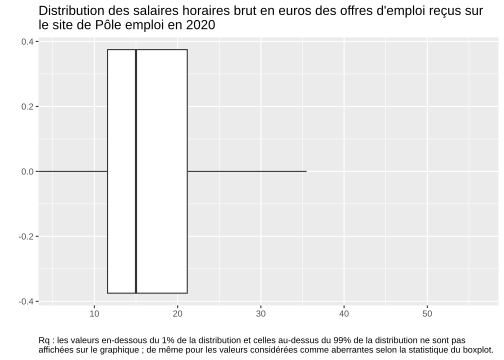
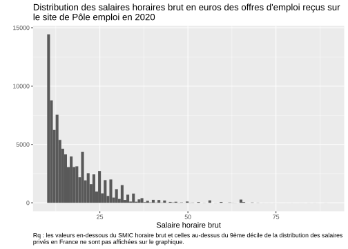
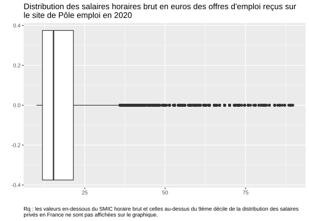
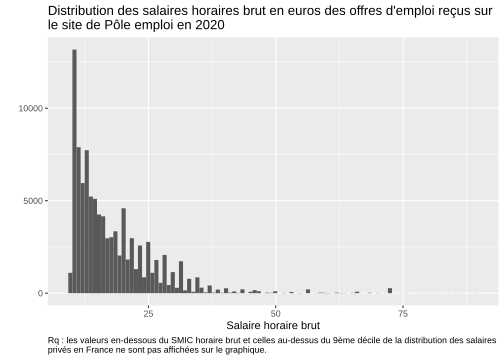

Section3 Manipulation des variables
Dans la manipulation des variables, l’une des premières choses à réaliser est de les définir dans le bon format, variables quantitatives/continues ou variables qualitatives/catégorielles.
On l’a vu dans la section précédente, certaines variables sont encore codées comme des nombres entiers (“integer”) alors que ce sont des variables catégorielles. On va donc corriger cela en regardant d’abord quelles variables sont concernées, en les sélectionnant avec select_if() ou select(where()) :
[1] "AGED" "AGER20" "AGEREV" "AGEREVQ" "ANAI" "CATPC"
[7] "COUPLE" "CS1" "DEPT" "ETUD" "IMMI" "INAI"
[13] "INATC" "IPONDI" "MOCO" "MODV" "NAIDT" "ORIDT"
[19] "REGION" "SEXE" "STAT_CONJ" "TACT" "TACTD16" A part les variables d’âge AGED et AGEREV, de date de naissance ANAI et de pondération IPONDI, toutes les autres variables devraient en format “factor”. Deux façons de les transformer, soit vous changer les variables une à une en utilisant les fonctions mutate() et as.factor() ; soit vous créer une liste avec le nom des variables dont le format doit être transformer et vous utilisez la fonction lapply() en l’appliquant à cette liste de variables :
# 1ère méthode
# RP_final <- RP_final %>% mutate(AGER20=as.factor(AGER20),
# AGEREVQ=as.factor(AGEREVQ),
# CATPC=as.factor(CATPC),
# COUPLE=as.factor(COUPLE),
# CS1=as.factor(CS1),
# DEPT=as.factor(DEPT),
# ETUD=as.factor(ETUD),
# IMMI=as.factor(IMMI),
# INAI=as.factor(INAI),
# INATC=as.factor(INATC),
# MOCO=as.factor(MOCO),
# MODV=as.factor(MODV),
# NAIDT=as.factor(NAIDT),
# ORIDT=as.factor(ORIDT),
# REGION=as.factor(REGION),
# SEXE=as.factor(SEXE),
# STAT_CONJ=as.factor(STAT_CONJ),
# TACT=as.factor(TACT),
# TACTD16=as.factor(TACTD16))
# 2nde méthode
list_var <- c("AGER20", "AGEREVQ", "CATPC", "COUPLE", "CS1", "DEPT", "ETUD", "IMMI", "INAI", "INATC",
"MOCO", "MODV", "NAIDT", "ORIDT", "REGION", "SEXE", "STAT_CONJ", "TACT", "TACTD16")
RP_final[, list_var] <- lapply(RP_final[, list_var], factor)On peut ensuite vérifier que ces variables sont bien des variables facteurs en regardant combien de modalités elles ont et quelles sont-elles. Par exemple, pour la variable CATPC :
[1] 3[1] "0" "1" "2"Si nous n’avions pas mis l’option transformant les variables caractères en variables facteurs lors du chargement des données, nous pourrions le faire maintenant en utilisant la fonction mutate_if ou la combinaison de mutate et across(where()) comme ceci RP %>% mutate_if(is.character, as.factor) ou RP %>% mutate(across(.cols = where(is.character), .fns = as.factor)).
On peut enfin vérifier quelles sont les variables numériques qui restent :
# RP_final %>% select_if(is.numeric) %>% head() %>% gt()
RP_final %>% select(where(is.numeric)) %>% head() %>% gt()| AGED | AGEREV | ANAI | IPONDI |
|---|---|---|---|
| 72 | 72 | 1944 | 3.360730 |
| 59 | 58 | 1958 | 3.668459 |
| 30 | 29 | 1987 | 3.668459 |
| 82 | 81 | 1938 | 3.478821 |
| 86 | 85 | 1934 | 3.478821 |
| 1 | 0 | 2019 | 2.776887 |
Plus généralement, il est souvent d’usage d’utiliser la fonction summary() pour donner un aperçu de l’ensemble des variables, soit de leur distribution pour les variables quantitatives, soit de leur répartition par modalités pour les variables qualitatives ; la fonction permet également de nous donner l’information sur l’existence et le nombre de valeurs manquantes pour chaque variable.
CANTVILLE ACHLR AEMMR AGED
75ZZ : 853167 3 :687155 9 :2032861 Min. : 0.00
9296 : 47490 4 :656626 8 : 286192 1st Qu.: 21.00
9398 : 43375 2 :314367 7 : 146463 Median : 36.00
9399 : 43104 1 :303570 6 : 91377 Mean : 38.44
9499 : 37585 6 :301595 Z : 34562 3rd Qu.: 55.00
9299 : 36678 5 :270547 5 : 30169 Max. :120.00
(Other):1574634 (Other):102173 (Other): 14409
AGER20 AGEREV AGEREVQ ANAI
54 :515753 Min. : 0.0 25 : 226438 Min. :1896
39 :412404 1st Qu.: 20.0 30 : 214781 1st Qu.:1963
64 :273384 Median : 36.0 35 : 197623 Median :1981
79 :263157 Mean : 37.5 20 : 186496 Mean :1980
29 :226438 3rd Qu.: 54.0 40 : 181466 3rd Qu.:1997
24 :186496 Max. :119.0 0 : 177322 Max. :2020
(Other):758401 (Other):1451907
ANEMR APAF ARM ASCEN BAIN
01 :655689 3 :777547 ZZZZZ :1782866 1:1460332 X: 34562
03 :564056 0 :643516 75115 : 90717 2:1141139 Z:2601471
02 :542791 2 :620004 75118 : 78739 Z: 34562
00 :317238 1 :539040 75120 : 75863
04 :256066 Z : 34562 75119 : 73388
05 :140210 6 : 8547 75113 : 70196
(Other):159983 (Other): 12817 (Other): 464264
BATI CATIRIS CATL CATPC CHAU CHFL
X: 34562 A: 29884 1:2601471 0:2601471 X: 34562 1:1370090
Z:2601471 D: 1488 Z: 34562 1: 26328 Z:2601471 2: 654195
H:2597963 2: 8234 3: 563224
X: 988 4: 13962
Z: 5710 X: 34562
CHOS CLIM CMBL COUPLE CS1 CUIS
X: 34562 X: 34562 1: 583799 1:1091726 8 :903563 X: 34562
Z:2601471 Z:2601471 2:1060384 2:1544307 3 :457534 Z:2601471
3: 117844 7 :374763
4: 764429 5 :343737
5: 7861 4 :323394
6: 67154 6 :162434
X: 34562 (Other): 70608
DEPT DIPL DNAI EAU EGOUL
75:853167 18 :486255 99 :716703 X: 34562 X: 34562
92:621663 ZZ :465748 75 :538277 Z:2601471 Z:2601471
93:629049 17 :280471 92 :262709
94:532154 13 :252762 93 :241894
14 :252350 94 :185218
16 :197267 78 : 37782
(Other):701180 (Other):653450
ELEC EMPL ETUD GARL HLML
X: 34562 ZZ :1432384 1: 689558 1:1286127 1: 784089
Z:2601471 16 : 913146 2:1946475 2:1315344 2:1817382
15 : 104235 Z: 34562 Z: 34562
21 : 86275
22 : 48699
11 : 25485
(Other): 25809
ILETUD ILT IMMI INAI INATC
Z :1946475 Z :1432384 1: 614842 1:738724 1:2180430
1 : 484682 3 : 533246 2:2021191 2:614762 2: 455603
3 : 114507 1 : 449857 3:518740
2 : 76273 2 : 204924 4: 45574
4 : 13812 4 : 12853 5: 1530
5 : 167 7 : 2524 6:716703
(Other): 117 (Other): 245
IPONDI IRAN IRIS LPRF
Min. : 0.000 1 :2305666 920120303: 6961 0:643516
1st Qu.: 1.103 2 : 112053 ZZZZZZZZZ: 5710 1:654441
Median : 2.933 4 : 69107 930700109: 5523 2:517420
Mean : 2.596 3 : 40599 751187110: 4104 3:762238
3rd Qu.: 3.404 Z : 38020 920360501: 3818 4: 17410
Max. :30.057 5 : 34401 751176714: 3807 5: 6446
(Other): 36187 (Other) :2606110 Z: 34562
LPRM METRODOM MOCO MODV
1 :1209833 M:2636033 22 :585580 32 :585580
3 : 763890 11 :569579 11 :569579
2 : 513339 32 :526421 50 :321174
8 : 38136 21 :449260 40 :291436
Z : 34562 12 :216515 12 :216515
6 : 32123 23 :137021 20 :205247
(Other): 44150 (Other):151657 (Other):446502
NA17 NA5 NAIDT NBPI
ZZ :1432384 AZ: 626 0 :1872226 03 :773582
OQ : 316215 BE: 68660 30 : 716703 04 :628152
MN : 223963 FZ: 50464 11 : 18616 02 :491816
GZ : 129585 GU: 767684 12 : 16979 05 :284228
JZ : 101100 OQ: 316215 14 : 5933 01 :263674
KZ : 78928 ZZ:1432384 13 : 3526 06 : 97433
(Other): 353858 (Other): 2050 (Other): 97148
ORIDT RECH REGION SANI SANIDOM
0 :2570233 0: 595136 11:2636033 0: 17248 XX: 34562
11 : 26547 1: 99394 1: 148161 ZZ:2601471
12 : 23668 2: 81634 2:2436062
14 : 8155 9: 189296 X: 34562
13 : 4671 Z:1670573
18 : 908
(Other): 1851
SEXE STAT_CONJ STATR STOCD SURF TACT
1:1263098 1: 806273 1:1067681 10:992691 4 :736488 11:1203649
2:1372935 2: 90782 2: 135968 21:627380 3 :583150 12: 179713
3: 229555 Z:1432384 22:757862 5 :440798 21: 382445
4: 101992 23:151152 1 :239343 22: 240715
5: 137488 30: 72386 2 :233363 23: 465748
6:1269943 ZZ: 34562 6 :189749 24: 64030
(Other):213142 25: 99733
TACTD16 TP TRANS TRIRIS TYPC
111 :1127202 1:1026823 1: 39223 ZZZZZZ : 47639 1: 259226
230 : 465748 2: 176826 2: 102898 931411 : 10563 2: 194433
210 : 382445 Z:1432384 3: 40772 920331 : 8408 3:2124270
220 : 240715 4: 44362 931071 : 8032 4: 22451
122 : 127564 5: 311836 940721 : 7834 5: 1091
250 : 99733 6: 664558 921011 : 7686 Z: 34562
(Other): 192626 Z:1432384 (Other):2545871
TYPL WC
1: 330946 X: 34562
2:2220098 Z:2601471
3: 25394
4: 15607
5: 1942
6: 7484
Z: 34562 Mais attention, le problème ici est que cela nous donne des fréquences non pondérées pour l’ensemble de nos variables qualitatives, donc qui n’ont finalement pas grand sens.
3.1 Manipulation des variables qualitatives
On peut d’abord travailler sur les variables qualitatives qui correspondent ici à l’essentiel de nos variables.
Comme on le sait, on peut regarder les différents niveaux pour chacune d’entre elles, avec la fonction levels(). Si on veut appliquer la fonction à l’ensemble de nos variables facteurs sans avoir donc à les indiquer une par une, on peut avoir recours à la fonction sapply() qui permet d’appliquer la fonction indiquée entre parenthèses (ici levels()) à tous les éléments de notre table de données.
# Pour info, ici cela s'écrirait :
RP_final %>% select(where(is.factor)) %>% sapply(levels)
# on peut même se passer de la sélection sur les variables :
# RP %>% sapply(levels)On peut ensuite vouloir retravailler les modalités de ces variables, car par exemple les modalités ne sont pas parlantes puisque nommées par des codes chiffres, ou parce que les modalités sont trop nombreuses et qu’on souhaiterait les rassembler pour une analyse ultérieure.
Par exemple, si l’on veut étudier la répartition de la population francilienne selon leur statut d’activité, on peut utiliser la variable TACT:
[1] "11" "12" "21" "22" "23" "24" "25"Mais le moins qu’on puisse dire c’est que les 7 modalités de cette variable ne sont pas parlantes, on peut donc recoder les modalités de cette variable dans une étape préalable DATA comme ici ; on pourra bien sûr enchaîner plus tard les lignes de codes et réaliser cette étape dans une même procédure avec le tableau ou le graphique représentant cette variable.
Commençons ici par l’étape DATA :
# On cherche à quoi correspondent les modalités chiffrées de cette variable
# dans le fichier "meta"
meta %>% filter(COD_VAR=="TACT") %>% select(COD_MOD, LIB_MOD)# A tibble: 7 × 2
COD_MOD LIB_MOD
<fct> <fct>
1 11 Actifs ayant un emploi, y compris sous apprentissage ou en stage rému…
2 12 Chômeurs
3 21 Retraités ou préretraités
4 22 Élèves, étudiants, stagiaires non rémunéré de 14 ans ou plus
5 23 Moins de 14 ans
6 24 Femmes ou hommes au foyer
7 25 Autres inactifs # On recode à partir de ces libellés, tout en regroupant certaines modalités
# qui sont très spécifiques et nous intéressent moins :
RP_final <- RP_final %>% mutate(TACT_moda = as.factor(
case_when(TACT == "11" ~ "Actifs en emploi",
TACT == "12" ~ "Chômeurs",
TACT == "21" ~ "Retraités",
TACT %in% c("22","23","24","25") ~ "Autres inactifs")))
levels(RP_final$TACT_moda)[1] "Actifs en emploi" "Autres inactifs" "Chômeurs" "Retraités" Si l’on veut changer l’ordre des modalités, qui s’afficheront comme ci-dessus dans un tableau ou un graphique, on peut utiliser la fonction fct_relevel() du package forcats (à installer avant puis à appeler avant de l’utiliser) :
# install.package("forcats")
library(forcats)
RP_final <- RP_final %>% mutate(TACT_moda =
fct_relevel(TACT_moda,
c("Actifs en emploi","Chômeurs",
"Retraités", "Autres inactifs")))
levels(RP_final$TACT_moda)[1] "Actifs en emploi" "Chômeurs" "Retraités" "Autres inactifs" Plus largement, pour travailler sur des variables qualitatives en particulier lorsqu’elles sont en format facteur, le package forcats est très utile. Outre une fonction de transformation d’une variable caractère en facteur (as_factor() proche de la version de baseR as.factor() utilisée en début de section), elle contient plein d’autres fonctions : fct_collapse() utilisée pour renommer ou regrouper des modalités d’une variable (au lieu de la double fonction as.factor() et case_when()) ; fct_relevel() utilisée également au-dessus pour trier les modalités comme on le souhaite ; fct_drop() pour enlever des niveaux de facteurs vides/sans effectifs ; fct_explicit_na() pour rendre les NA explicites en créant une modalité “(missing)” ; fct_reorder() et fct_reorder2() pour réordonner les modalités d’une variable, très utile pour les graphiques car utilisables directement dans ggplot() ; fct_lump() pour regrouper les modalités les plus communes (ou au contraire les moins communes) en lui indiquant entre parenthèses le nombre n= de modalités souhaitées ou la proportion minimum souhaitée prop=, et en sélectionnant la variable avec la fonction pull() avant car elle doit être en format vecteur et non data.frame ; ou encore fct_recode() pour changer le niveau des facteurs ; fct_other() ; fct_infreq() et fct_inorder() ; etc. Un bon récapitulatif de ces fonctions est présenté ici.
3.2 Manipulation des variables quantitatives
Comme nous l’avons vu plus haut, il y a peu de variables quantitatives dans cette base et l’une d’entre elles est la pondération, donc on va regarder plus précisément la variable AGED. Cependant, celle-ci aussi est particulière car c’est une variable numérique constituée d’entiers naturels (et non de valeurs réelles) qui vont de 0 à 120 ; dans le fichier des métadonnées (ou le dictionnaire des variables disponible également sur le site de l’Insee), on se rend compte que la variable a été pensée comme catégorielle avec des modalités d’abord codées comme “000”, “001”, etc.
# A tibble: 6 × 2
COD_MOD LIB_MOD
<fct> <fct>
1 115 115 ans
2 116 116 ans
3 117 117 ans
4 118 118 ans
5 119 119 ans
6 120 120 ansOn peut alors regarder rapidement la distribution de cette variable.
Min. 1st Qu. Median Mean 3rd Qu. Max.
0.00 21.00 36.00 38.44 55.00 120.00 On peut aussi construire des variables continues en agrégeant certaines informations au niveau des communes par exemple. Reprenons la variable d’activité dont nous avons recoder et regrouper les modalités et calculons-là pour avoir le nombre de chaque modalité par commune. Il faut pour cela créer la variable de commune, qu’on appelera COM, à partir de l’IRIS :
On va ensuite sommer chaque modalité de la variable TACT_moda en utilisant la pondération en groupant par commune.
EXERCICE :
Créer donc un tableau qui aura 3 colonnes COM, TACT_moda et n. Vous pouvez utiliser les fonctions group_by suivi soit de count, soit de summarise ; on cherchera finalement à arrondir ces valeurs à l’unité avec la fonction round(). Vous devez obtenir le tableau suivant :
On voit qu’on a un tableau dans un format “long” puisqu’il y a plusieurs observations pour une seule commune. On va utiliser la fonction pivot_wider() mentionnée précédemment pour n’avoir qu’une ligne par commune et en colonne les types de statut avec leur nombre respectif.
# A tibble: 137 × 5
COM `Actifs en emploi` Chômeurs Retraités `Autres inactifs`
<chr> <dbl> <dbl> <dbl> <dbl>
1 75101 8366 941 2630 3979
2 75102 13118 1378 2148 4964
3 75103 19239 2085 4589 8123
4 75104 15227 1863 4508 7513
5 75105 27378 2611 10607 17618
6 75106 18073 1842 8180 12176
7 75107 23394 2165 9573 13735
8 75108 18254 1565 5297 10534
9 75109 34155 3482 7264 15125
10 75110 46454 6343 10645 23078
# ℹ 127 more rows3.2.1 Détecter et “visualiser” les valeurs manquantes
Pour travailler sur les valeurs manquantes et valeurs aberrantes de variables quantitatives, on va s’appuyer sur une autre base de données, plus pertinente pour cela. Vous la trouverez sur l’espace de cours sur Moodle : il s’agit d’une extraction de la base de données JOCAS de la Dares (cf. ici) qui compile les offres d’emploi de l’année 2020 à partir de laquelle nous avons sélectionné les offres provenant de Pôle emploi (nouvellement France Travail) pour les communes de Paris et sa petite couronne.
Une fois copiée dans le dossier “data/” du projet R, ouvrons cette base de données et commençons l’exploration de ses variables et de leurs valeurs manquantes :
| date_firstSeenDay | date_scraping | date_sitePublicationDay | job_title | job_ROME_code | job_qualification | contractType | contractDuration_min | contractDuration_max | contractDuration_period | contractDuration_value | workTime_hours | workTime_category | workTime_value | location_label | location_zipcode | location_departement | salary_min | salary_max | salary_period | salary_value | salary_hourly_mean | salary_hourly_min | salary_hourly_max | entreprise_nom | entrepriseSecteur_NAF88 | entrepriseSecteur_NAF21 | teleworking_mentioned | experience_min | experience_max | education_level |
|---|---|---|---|---|---|---|---|---|---|---|---|---|---|---|---|---|---|---|---|---|---|---|---|---|---|---|---|---|---|---|
| 2020-01-01 | Thu Jan 02 14:06:14 2020 | 2020-01-01 | Ménagère/ménager à domicile (H/F) | K1304 | NA | CDD | 6 | 6 | MONTH | 130 | NA | PARIS 02 | 75002 | 75 | NA | NA | NA | NA | NA | NA | Particulier Employeur | 97 | T | FALSE | 0 | NA | [] | |||
| 2020-01-01 | Thu Jan 02 14:06:14 2020 | 2020-01-01 | Dessinateur / Dessinatrice d'exécution du BTP (H/F) | F1104 | 9 | CDI | NA | NA | NA | 35H | FULL_TIME_INFER | 35 | PUTEAUX | 92800 | 92 | 28000 | 32000 | YEAR | 18.67 | 18.67 | 17.43 | 19.92 | Human Talent | NA | FALSE | 1 | NA | [] | ||
| 2020-01-01 | Thu Jan 02 14:06:14 2020 | 2020-01-01 | Secrétaire juridique (H/F) | M1607 | 9 | CDI | NA | NA | NA | 35H | FULL_TIME_INFER | 35 | ISSY LES MOULINEAUX | 92130 | 92 | 30000 | 42000 | YEAR | 22.41 | 22.41 | 18.67 | 26.14 | ProJob Carrières | NA | FALSE | 3 | NA | ['Bac+2 ou équivalents'] | ||
| 2020-01-01 | Thu Jan 02 14:06:15 2020 | 2020-01-01 | Garde d'enfant à domicile (H/F) | K1303 | NA | CDD | 9 | 9 | MONTH | 195 | NA | PARIS 10 | 75010 | 75 | NA | NA | NA | NA | NA | NA | Particulier Employeur | 97 | T | FALSE | 0 | NA | [] | |||
| 2020-01-01 | Thu Jan 02 14:06:15 2020 | 2020-01-01 | Baby-sitter (H/F) | K1303 | NA | CDD | 2 | 2 | MONTH | 43 | NA | PARIS 17 | 75017 | 75 | NA | NA | NA | NA | NA | NA | Particulier Employeur | 97 | T | FALSE | 0 | NA | [] | |||
| 2020-01-01 | Thu Jan 02 14:06:15 2020 | 2020-01-01 | Baby-sitter (H/F) | K1303 | NA | CDD | 8 | 8 | MONTH | 173 | NA | JOINVILLE LE PONT | 94340 | 94 | NA | NA | NA | NA | NA | NA | Particulier Employeur | 97 | T | FALSE | 0 | NA | [] |
date_firstSeenDay date_scraping date_sitePublicationDay
Min. :2020-01-01 Length:420523 Min. :2020-01-01
1st Qu.:2020-03-09 Class :character 1st Qu.:2020-03-09
Median :2020-06-29 Mode :character Median :2020-06-29
Mean :2020-06-18 Mean :2020-06-18
3rd Qu.:2020-09-16 3rd Qu.:2020-09-16
Max. :2020-12-31 Max. :2020-12-31
job_title job_ROME_code job_qualification contractType
Length:420523 Length:420523 Min. :1.00 Length:420523
Class :character Class :character 1st Qu.:6.00 Class :character
Mode :character Mode :character Median :7.00 Mode :character
Mean :6.78
3rd Qu.:8.00
Max. :9.00
NA's :305296
contractDuration_min contractDuration_max contractDuration_period
Min. : 1.0 Min. : 1.0 Length:420523
1st Qu.: 3.0 1st Qu.: 3.0 Class :character
Median : 6.0 Median : 6.0 Mode :character
Mean : 8.5 Mean : 8.5
3rd Qu.:10.0 3rd Qu.:10.0
Max. :99.0 Max. :99.0
NA's :328334 NA's :328334
contractDuration_value workTime_hours workTime_category workTime_value
Min. : 1.0 Length:420523 Length:420523 Min. : 1.0
1st Qu.: 65.0 Class :character Class :character 1st Qu.:35.0
Median : 130.0 Mode :character Mode :character Median :35.0
Mean : 147.6 Mean :31.3
3rd Qu.: 195.0 3rd Qu.:35.0
Max. :20656.0 Max. :56.0
NA's :328383 NA's :332206
location_label location_zipcode location_departement salary_min
Length:420523 Min. :75000 Length:420523 Min. : 3
Class :character 1st Qu.:75006 Class :character 1st Qu.: 1550
Mode :character Median :92150 Mode :character Median : 2165
Mean :86066 Mean : 14480
3rd Qu.:93120 3rd Qu.: 30000
Max. :95926 Max. :500000
NA's :68798 NA's :319455
salary_max salary_period salary_value salary_hourly_mean
Min. : 7 Length:420523 Min. : 0.2 Min. : 0.2
1st Qu.: 2000 Class :character 1st Qu.: 11.5 1st Qu.: 11.6
Median : 3700 Mode :character Median : 14.8 Median : 15.0
Mean : 21255 Mean : 20.1 Mean : 20.1
3rd Qu.: 39000 3rd Qu.: 21.0 3rd Qu.: 21.2
Max. :500000 Max. :40200.0 Max. :40200.0
NA's :352552 NA's :319923 NA's :319923
salary_hourly_min salary_hourly_max entreprise_nom entrepriseSecteur_NAF88
Min. : 0.1 Min. : 0.2 Length:420523 Min. : 1.00
1st Qu.: 11.1 1st Qu.: 13.7 Class :character 1st Qu.:70.00
Median : 13.9 Median : 17.8 Mode :character Median :78.00
Mean : 18.1 Mean : 24.4 Mean :74.44
3rd Qu.: 19.8 3rd Qu.: 24.9 3rd Qu.:85.00
Max. :39600.0 Max. :40800.0 Max. :99.00
NA's :319923 NA's :352834 NA's :285597
entrepriseSecteur_NAF21 teleworking_mentioned experience_min
Length:420523 Mode :logical Min. : 0.000
Class :character FALSE:417778 1st Qu.: 0.000
Mode :character TRUE :2745 Median : 0.000
Mean : 1.137
3rd Qu.: 2.000
Max. :35.000
NA's :316
experience_max education_level
Min. : 0.2 Length:420523
1st Qu.: 2.0 Class :character
Median : 5.0 Mode :character
Mean : 4.5
3rd Qu.: 5.0
Max. :99.0
NA's :381324 Avec le head(), on remarque néanmoins que certaines variables ont des cellules vides (sans valeur ni ‘NA’), ce sont également des valeurs manquantes, c’est par exemple le cas pour la variable ‘contractDuration_period’, nous verrons après si les packages gérant les valeurs manquantes détectent également ces cellules vides.
La fonction summary() permet donc de donner une première information sur les valeurs manquantes des différentes variables. Pour se concentrer sur cette seule information, on peut compter le nombre de valeurs manquantes NA pour chacune des variables avec la fonction colSums() ; pour les avoir en proportion du nombre total d’observations (lignes), on peut utiliser la fonction colMeans() ; sinon, on peut utiliser la fonction summarise combinée avec across(where()), ) si l’on veut sélectionner uniquement les variables numériques et leur appliquer la fonction sommant les NA :
date_firstSeenDay date_scraping date_sitePublicationDay
0 0 0
job_title job_ROME_code job_qualification
0 0 305296
contractType contractDuration_min contractDuration_max
0 328334 328334
contractDuration_period contractDuration_value workTime_hours
0 328383 0
workTime_category workTime_value location_label
0 332206 0
location_zipcode location_departement salary_min
68798 0 319455
salary_max salary_period salary_value
352552 0 319923
salary_hourly_mean salary_hourly_min salary_hourly_max
319923 319923 352834
entreprise_nom entrepriseSecteur_NAF88 entrepriseSecteur_NAF21
0 285597 0
teleworking_mentioned experience_min experience_max
0 316 381324
education_level
0 # Pour les avoir en proportion par rapport au nombre total d'observations
# et arrondies à 2 chiffres après la virgule :
round(colMeans(is.na(OffresPE_2020)*100), 2) date_firstSeenDay date_scraping date_sitePublicationDay
0.00 0.00 0.00
job_title job_ROME_code job_qualification
0.00 0.00 72.60
contractType contractDuration_min contractDuration_max
0.00 78.08 78.08
contractDuration_period contractDuration_value workTime_hours
0.00 78.09 0.00
workTime_category workTime_value location_label
0.00 79.00 0.00
location_zipcode location_departement salary_min
16.36 0.00 75.97
salary_max salary_period salary_value
83.84 0.00 76.08
salary_hourly_mean salary_hourly_min salary_hourly_max
76.08 76.08 83.90
entreprise_nom entrepriseSecteur_NAF88 entrepriseSecteur_NAF21
0.00 67.91 0.00
teleworking_mentioned experience_min experience_max
0.00 0.08 90.68
education_level
0.00 # Ou en langage tidyverse sur les seules variables numériques :
OffresPE_2020 %>%
summarise(across(.cols = where(is.numeric), .fns = ~ sum(is.na(.)))) %>%
gt()| job_qualification | contractDuration_min | contractDuration_max | contractDuration_value | workTime_value | location_zipcode | salary_min | salary_max | salary_value | salary_hourly_mean | salary_hourly_min | salary_hourly_max | entrepriseSecteur_NAF88 | experience_min | experience_max |
|---|---|---|---|---|---|---|---|---|---|---|---|---|---|---|
| 305296 | 328334 | 328334 | 328383 | 332206 | 68798 | 319455 | 352552 | 319923 | 319923 | 319923 | 352834 | 285597 | 316 | 381324 |
On remarque que sur 31 variables, 14 ont des valeurs manquantes NA. Pour certaines d’entre elles, il y a beaucoup de valeurs manquantes (job_qualification, contratDuration_min, contratDuration_max, contractDuration_value, workTime_value, salary_min, salary_max, salary_value, salary_hourly_mean, salary_hourly_min, salary_hourly_max, entrepriseSecteur_NAF88, experience_max), et pour d’autres un peu moins (location_zipcode, experience_min). En proportion, on se rend compte que pour les premières variables citées, les valeurs manquantes sont présentes pour plus des 3/4 des observations, cela posera forcément des problèmes pour l’analyse !
Pour en faire une analyse plus poussée, différents packages existent pour détecter et visualiser ces données manquantes. L’un d’entre eux est le package naniar : quelques fonctions permettent d’abord de décrire la base selon ses valeurs manquantes. Cela donne un aperçu global et rapide, mais cela n’est vraiment pas suffisant pour comprendre l’origine et les enjeux (possibles problèmes) de ces valeurs manquantes.
library(naniar)# Ci-dessous : nombre de cellules du tableau ou de n_ij d'une matrice
# qui correspondent à des valeurs manquantes :
n_miss(OffresPE_2020) [1] 4343198# Pour les avoir en proportion du nombre total de cellules du tableau
# et non des seules lignes comme précédemment,
# le résultat est déjà en pourcentage, sinon utiliser `prop_miss(RP)`)
pct_miss(OffresPE_2020) [1] 33.31641# Ci-dessous : nombre de cellules du tableau ou de n_ij d'une matrice
# qui correspondent à des valeurs renseignées :
n_complete(OffresPE_2020) [1] 8693015[1] 66.68359On peut ensuite visualiser le nombre de valeurs manquantes par variable, avec la fonction gg_miss_var() du même package. On peut également demander dans gg_miss_var() à ce que les valeurs soient en pourcentage, avec l’argument show_pct=TRUE.

Le problème est que pour la variable dont on avait vu qu’elle avait des valeurs vides - contractDuration_period -, ce graphique donne l’impression qu’elle n’a pas de valeurs manquantes. Cela est probablement dû au moment de l’importation des fichiers journaliers de l’ensemble de l’année 2020 et pour les variables caractères, les cellules vides ne sont pas automatiquement remplacées par des “NA” (sauf à mettre l’argument na.strings = c("", "NA") dans une fonction read.csv()). Il faut donc pour les variables de type “character” remplacer les celulles vides par des NA, on utilise pour cela la fonction na_if() qui va remplacer pour l’ensemble des variables les valeurs vides "" par des Na.
OffresPE_2020 <- OffresPE_2020 %>%
mutate(across(.cols = where(is.character), .fns = ~ na_if(., "")))
OffresPE_2020 %>% gg_miss_var(show_pct=FALSE)On remarque qu’il y a davantage de variables avec des valeurs manquantes.
On peut aussi réaliser des graphiques montrant le nombre de valeurs manquantes pour l’ensemble des variables numériques de la base, en fonction d’une autre variable (y compris de nature ‘factor’), avec l’argument fct= dans gg_miss_fct(). Cela est intéressant pour voir si certaines valeurs manquantes des variables sont liées à des valeurs observées d’autres variables, qu’elles soient quantitatives ou qualitatives (et dans ce cas, est-ce que les valeurs manquantes se retrouvent davantage dans certaines modalités plus que d’autres ?). Par exemple, ici, selon le contrat de travail en rassemblant quelques modalités avant :
# on filtre sur les variables numériques car on ne veut pas que la sortie nous affiche
# toutes les variables.
OffresPE_2020 %>% select(where(is.numeric), contractType) %>%
mutate(contractType=as.factor(case_when(contractType=="MIS" ~ "Intérim",
contractType %in% c("CDS","SAI","TTI", "DDI") ~ "Autres CDD",
contractType %in% c("CCE", "REP", "DIN") ~ "Autres",
TRUE ~ contractType))) %>%
gg_miss_fct(fct = contractType)
On voit que les valeurs manquantes sont très nombreuses pour certaines modalités de la variable de contrat comme “Franchise” et “Indépendant”. Cela varie ensuite selon les variables, par exemple pour la modalité “CDD” il n’y a aucune valeur manquante pour les variables de durée des contrats mais davantage pour celles sur les salaires. On voit bien que cela peut être logique : on doit donner la durée du contrat pour un CDD mais pas pour un CDI ni un indépendant… Les valeurs manquantes peuvent donc avoir un sens. Ainsi, les valeurs manquantes ne se distribuent pas de manière uniforme selon la variable de contrat de travail, parfois avec une raison, parfois non.
Ensuite, la fonction gg_miss_upset() de ce même package naniar permet de visualiser des dépendances entre, cette fois, les valeurs manquantes des variables :

Cela nous montre qu’il y a beaucoup d’observations où on a des valeurs manquantes pour 5 variables indiquées, qu’ensuite le cas le plus probable c’est des valeurs manquantes pour 4 de ces 5 variables, etc.
Enfin, il est possible d’appliquer la fonction geom_miss_point() à une fonction ggplot, dans ce cas les valeurs manquantes de la ou des variables sont remplacées par des valeurs 10% plus basses que la valeur minimum observée des variables, et cela afin de les visualiser.
Il existe bien sûr bien d’autres packages, comme funModeling, Amelia et sa fonction missmap(), ou encore visdat et sa fonction vis_miss(). Enfin, d’autres packages comme VIM ou MICE permettent, non seulement de visualiser ces valeurs manquantes, mais également de leur appliquer des techniques pour les “gérer”, c’est ce que l’on va voir maintenant en résumé.
3.2.2 Gérer les valeurs manquantes
Il est bien de connaître le nombre et la proportion de valeurs manquantes dans nos données, comment ces dernières se répartissent entre elles, etc., mais il faut aussi comprendre quel impact elles peuvent avoir sur des analyses statistiques, de régressions ou autres algorithmes.
Dans une base de données tirée d’une enquête, les valeurs manquantes peuvent provenir d’une non-réponse de la part de l’enquêté (que ce soit un individu ou une entreprise), cette non-réponse pouvant être “totale” (on a aucune donnée pour cet enquêté alors qu’il fait partie de l’échantillon) ou “partielle” (on a une partie des réponses mais pas à toutes les questions et donc des variables parfois avec des valeurs manquantes) ; ou bien encore elles peuvent être dues à une mauvaise saisie de l’information par l’enquêteur. La pondération, si elle est présente dans une enquête, peut permettre de corriger cette non-réponse totale, voire partielle.
Les conséquences des valeurs manquantes dans une base de données dépendent de plusieurs choses : on doit d’abord se demander si l’information perdue aurait été pertinente et/ou aurait apporté un élément particulier/supplémentaire. Ensuite, la perte éventuelle d’information est-elle importante, en nombre/en proportion. Et enfin (et surtout), peut-elle créer un biais lors de l’estimation et de la précision du phénomène que l’on souhaite observer, décrire, analyser, etc. Selon l’importance de ces conséquences, il faut traiter ces valeurs manquantes, c’est-à-dire utiliser une procédure la plus adaptée possible selon le potentiel biais repéré.
Traditionnellement dans la littérature, on distingue 3 types de valeurs manquantes :
- valeur manquante entièrement due au hasard (‘MCAR’ pour Missing completely at random) : il n’y a pas de lien entre la valeur manquante pour une variable donnée et les autres variables, dit autrement la probabilité pour une variable qu’elle ait une valeur manquante est constante dans les données, elle ne diffère pas selon d’autres caractéristiques des individus ;
- valeur manquante due au hasard (‘MAR’ pour Missing at random) : il y a un lien entre la valeur manquante pour une variable donnée et les valeurs observées d’autres variables, c’est-à-dire que la probabilité pour une variable qu’elle ait une valeur manquante dépend d’autres variables (de leurs valeurs observées), elle ne sera donc pas la même selon les individus, c’est ce qu’on essayait de regarder lorsqu’on a utilisé plus haut la fonction
gg_miss_fct(fct=); - valeur ne manquant pas au hasard (‘NMAR’ pour Non missing at random) : il y a un lien entre la valeur manquante pour une variable et les valeurs manquantes/non observées d’autres variables. Ce sont celles qui risquent d’entraîner des biais importants si on ne les traite pas, c’est ce qu’on essayait de regarder plus haut également avec la fonction
gg_miss_upset()cette fois.
Comment alors les gérer ? En pratique, il est d’usage lorsque la proportion de valeurs manquantes ne dépasse pas 5% des données de ne rien faire de particulier ou simplement de les supprimer (vous pouvez pour la savoir utiliser les premières fonctions du package naniar présentées précédemment). Sinon, on essaye d’appliquer plusieurs méthodes, simples ou plus complexes.
Dans le cas de valeurs manquantes entièrement dues au hasard (MCAR) et/ou d’une faible proportion des valeurs manquantes dans le total de la table de données, on peut décider de supprimer toutes les lignes qui contiennent au moins une valeur manquante, afin d’avoir une table de données complètes, on peut utiliser la fonction na.omit() ou complete.cases() ; attention à ne pas remplacer votre table de données initiale en réalisant cette procédure. On ne va pas s’essayer à le faire ici car on a vu au tout début de cette section que pour certaines variables cela concernait beaucoup d’observations (comme le salaire ou la durée du contrat pour les CDI), la conséquence c’est qu’ici on va supprimer toutes les lignes car une ligne a forcément une valeur manquante dans une des variables. Le code serait celui-ci :
OffresPE_2020_sansNA <- na.omit(OffresPE_2020)
# OU :
# OffresPE_2020_sansNA <- OffresPE_2020[complete.cases(OffresPE_2020), ]Des techniques d’imputation simple peuvent également être utilisées. On peut par exemple remplacer les valeurs manquantes d’une variable quantitative par sa moyenne ou sa médiane, pour cela on peut utiliser la fonction replace_na() du package tidyr, ou impute() du package Hmisc, ou encore na.aggregate() du package zoo On donne ainsi une valeur “artificielle” pour remplacer la valeur manquante. Dans le cas de variables qualitatives, on peut, de même, imputer la modalité dominante (avec la fonction mode() du package Hmisc ; ou avec l’argument mode= du package zoo). Par exemple, voici les codes pour remplacer les valeurs manquantes de la variable ‘salary_value’ par sa médiane (la base n’étant pas propre il vaut mieux utiliser la médiane que la moyenne) :
OffresPE_2020 %>%
mutate(salary_value_bis = replace_na(salary_value,
median(salary_value, na.rm=TRUE))) %>%
select(salary_value, salary_value_bis) %>%
filter(is.na(salary_value)) %>%
head(5)# A tibble: 5 × 2
salary_value salary_value_bis
<dbl> <dbl>
1 NA 14.8
2 NA 14.8
3 NA 14.8
4 NA 14.8
5 NA 14.8# library(Hmisc)
# OffresPE_2020$salary_value_bis <- with(OffresPE_2020, impute(salary_value, median))
#
# library(zoo)
# OffresPE_2020$salary_value_bis <- na.aggregate(OffresPE_2020$ salary_value,
# FUN = median)On peut néanmoins réaliser ce type d’imputation simple de manière un petit peu plus subtile. Par exemple, si la moyenne de la variable diffère sensiblement selon une autre variable (catégorielle), dans ce cas, on va plutôt remplacer les valeurs manquantes de la variable selon la moyenne associée à chaque modalité de cette autre variable en ajoutant un group_by() avant la fonction mutate() si on utilise la fonction replace_na() comme dans l’exemple précédent.
Si on ne veut pas supprimer ces lignes d’observations et perdre ainsi d’autres informations (celles des variables pour lesquelles la valeur était renseignée pour cette même observation), on peut simplement créer une variable indicatrice de valeur manquante, remplacer les NA par ‘999’ pour des variables quantitatives, ou par une modalité ‘Manquant’ ou ‘Missing’ pour des variables qualitatives.
Plusieurs autres méthodes existent également dans le cas de valeurs manquantes dues au hasard (MAR), en voici la liste pour information et sans prétention d’exhaustivité : - analyse pondérée pour des valeurs MAR qui consiste à calculer la probabilité qu’une observation soit complète et ensuite à affecter à chacune des observations complètes, un poids inversement proportionnel à cette probabilité ; - imputation de la dernière observation pour des données temporelles ; - imputation “hot-deck” qui consiste à remplacer la valeur manquante par une valeur observée chez un autre individu ayant les mêmes caractéristiques, ou “cold-deck” (même démarche que précédement, sauf que la valeur imputée vient d’une autre source) ; - imputation par le “plus proche voisin” en utilisant une fonction de distance basée sur plusieurs autres variables/caractéristiques de l’individu ; - imputation par un modèle de régression où l’on va remplacer la valeur manquante par une valeur prédite obtenue par régression sur données complètes de la variable comportant des valeurs manquantes.
Il y a aussi des techniques plus complextes d’imputation multiple qui consiste à créer plusieurs valeurs possibles pour une valeur manquante d’une variable, cela peut être adaptée là aussi lorsque les valeurs manquantes sont dues au hasard (MAR).
Vous trouverez de multiples ressources sur internet dans des ouvrages libres d’accès, ou vous pouvez aller voir un des chapitres de l’ouvrage principal support du cours (Husson, 2018), avec des exemples d’utilisation.
3.2.3 Détecter et “visualiser” les valeurs aberrantes
On va continuer avec cette base de données en s’intéressant maintenant aux valeurs aberrantes.
On peut d’abord étudier la distribution de ces variables : la fonction get_summary_stats() du package rstatix permet de donner les statistiques de distribution des variables. On propose d’afficher ici les variables de salaire, d’expérience minimum, de durée des contrat et de temps de travail, pour les seuls CDD et CDI pour que cela soit plus pertinent.
library(rstatix)
# Au total : 65 449 CDD ; 315 063 CDI
# 'contractDuration_value' : exprimée en jours
# 'experience_min' : nombre minimum d’années d’expérience nécessaire pour le
# poste (0 s’il est précisé que les personnes sans expérience sont acceptées).
# 'salary_hourly_mean' : salaire horaire, moyen si min et max proposé, et recalculé
# selon la plage temporelle dans laquelle le salaire est exprimé.
# 'workTime_value' : temps de travail exprimé en heures
OffresPE_2020 %>% filter(contractType %in% c("CDD", "CDI")) %>%
group_by(contractType) %>%
get_summary_stats(salary_value, salary_min, salary_hourly_mean,
experience_min, contractDuration_value, workTime_value,
show=c("n","mean", "median", "min", "max","q1", "q3")) %>%
gt()| contractType | variable | n | mean | median | min | max | q1 | q3 |
|---|---|---|---|---|---|---|---|---|
| CDD | salary_value | 19920 | 14.798 | 12.43 | 0.31 | 1540 | 10.44 | 16.48 |
| CDD | salary_min | 20229 | 6399.724 | 1600.00 | 3.00 | 288000 | 20.00 | 2130.00 |
| CDD | salary_hourly_mean | 19920 | 14.412 | 12.31 | 0.31 | 1540 | 10.35 | 16.18 |
| CDD | experience_min | 65416 | 0.561 | 0.00 | 0.00 | 20 | 0.00 | 1.00 |
| CDD | contractDuration_value | 65283 | 163.510 | 130.00 | 1.00 | 20656 | 108.00 | 217.00 |
| CDD | workTime_value | 22702 | 26.393 | 35.00 | 1.00 | 50 | 14.00 | 35.00 |
| CDI | salary_value | 70438 | 21.059 | 16.15 | 0.16 | 40200 | 11.87 | 23.03 |
| CDI | salary_min | 70582 | 17120.800 | 3000.00 | 3.00 | 350000 | 1700.00 | 32000.00 |
| CDI | salary_hourly_mean | 70438 | 21.189 | 16.48 | 0.16 | 40200 | 12.19 | 23.34 |
| CDI | experience_min | 314781 | 1.268 | 1.00 | 0.00 | 35 | 0.00 | 2.00 |
| CDI | workTime_value | 57335 | 32.703 | 35.00 | 1.00 | 56 | 35.00 | 35.00 |
Cela nous permet de comprendre qu’il y a probablement encore quelques filtres à effectuer pour avoir une base propre et cohérente, non seulement sur les valeurs maximum - on va y venir - mais aussi sur les valeurs minimum. Peut-on ainsi avoir un salaire brut horaire proposé de 0,16€ (minimum) ou de 40200€ (maximum) dans les offres d’emploi en CDI ? De plus, comme on a vu qu’il y avait beaucoup de valeurs manquantes sur les variables de salaire ou de temps de travail, il faudra indiquer que ces valeurs ne sont pas nécessairement représentatives de l’ensemble des offres de Pôle emploi.
On peut également faire quelques graphiques sur ces variables pour mieux visualiser ces valeurs aberrantes, par exemple un histogramme, ou une “boîte à moustache” (seule ou en relation avec une autre variable) :
Warning: Removed 319923 rows containing non-finite outside the
scale range (`stat_bin()`).
Warning: Removed 319923 rows containing non-finite outside the
scale range (`stat_boxplot()`).
On voit bien des points aberrants qui “écrasent” les représentations graphiques, que ce soit avec l’histogramme ou la boîte à moustâche, de telle sorte qu’on ne voit même pas la distribution, en particulier dans le Boxplot la “boîte” en elle-même.
Pour rappel, dans un boxplot, par défaut un point est affiché comme aberrant s’il est en dehors de l’intervalle suivant : \(I=[Q_{1}−1.5×IQR ; Q_{3}+1.5×IQR]\), IQR étant l’intervalle interquartile donc la différence entre Q1 et Q3.
Mais s’agit-il de “vraies” valeurs aberrantes ? Combien d’observations concernent-elles ? La fonction boxplot.stats() permet de récupérer les valeurs des observations indiquées comme aberrantes, comme cela on peut créer ensuite une variable indiquant si oui ou non l’observation a une valeur “aberrante”. Faisons-cela pour la variable de salaire horaire (brut) moyen.
# On récupère les valeurs de la partie 'out' des sorties de la fonction
# 'boxplot.stats', qui correspondent aux valeurs de tout point de données
# qui se situe au-delà des extrêmes de la boxplot
val_outliers <- boxplot.stats(OffresPE_2020$salary_hourly_mean)$out
# On crée une variable dans notre table d'"identification" de ces outliers avec
# comme modalité "vraie" si l'observation a une valeur "outliers", sinon "Faux"
# et en créant une modalité pour les valeurs manquantes
OffresPE_2020 <- OffresPE_2020 %>%
mutate(salary_outliers =
case_when(is.na(salary_hourly_mean) ~ "NA",
salary_hourly_mean %in% c(val_outliers) ~ "Vrai",
TRUE ~ "Faux"))
# Puis on regarde la répartition avec la fonction `tabyl()` du package `janitor()`
library(janitor)
OffresPE_2020 %>% tabyl(salary_outliers) %>%
adorn_totals("row") %>% adorn_pct_formatting() %>%
gt()| salary_outliers | n | percent |
|---|---|---|
| Faux | 97233 | 23.1% |
| NA | 319923 | 76.1% |
| Vrai | 3367 | 0.8% |
| Total | 420523 | 100.0% |
OffresPE_2020 %>% filter(salary_outliers !="NA") %>%
tabyl(salary_outliers) %>%
adorn_totals("row") %>% adorn_pct_formatting() %>%
gt()| salary_outliers | n | percent |
|---|---|---|
| Faux | 97233 | 96.7% |
| Vrai | 3367 | 3.3% |
| Total | 100600 | 100.0% |
On y lit que pour cette variable lorsqu’elle est renseignée, il y aurait près de 3,3% de valeurs aberrantes telles qu’indiquées par le boxplot, ce qui correspondant à 3 367 observations, c’est beaucoup ! On peut regarder plus précisément à quelles observations elles correspondent, en sélectionnant avec la variable créée et en triant par ordre croissant ou décroissant.
OffresPE_2020 %>% filter(salary_outliers=='Vrai') %>%
select(salary_hourly_mean, contractType) %>%
arrange(salary_hourly_mean) %>% head(5) %>%
gt()| salary_hourly_mean | contractType |
|---|---|
| 35.60 | CDI |
| 35.60 | CDD |
| 35.71 | CDI |
| 35.72 | CDI |
| 35.79 | CDI |
OffresPE_2020 %>% filter(salary_outliers=='Vrai') %>%
select(salary_hourly_mean, contractType) %>%
arrange(desc(salary_hourly_mean)) %>% head(5) %>%
gt()| salary_hourly_mean | contractType |
|---|---|
| 40200 | CDI |
| 35000 | CDI |
| 26000 | MIS |
| 22000 | MIS |
| 20015 | CDI |
On voit donc qu’il y a des valeurs considérées comme aberrantes en haut de la distribution, à partir d’un salaire brut horaire de 35,60€ (tri par odre croissant), les plus hauts salaires brut horaires étant de 40200€ ou 35000 (tri par ordre décroissant). Attention, un salaire brut horaire de 35,60€ correspond pour un temps plein (35H/semaine) à un salaire brut mensuel d’environ 4984€, est-ce vraiment une valeur aberrante ?! Pour être plus précis, on peut calculer les valeurs seuils bas et haut puisqu’on connaît la formule. Le seuil bas sera : -2.79 et le seuil haut : 35.53. Comme déjà dit, le seuil haut est vraisemblables en réalité, en revanche avoir un salaire brut horaire négatif ou proche de 0 n’est pas possible ! Il est donc important de comprendre ces valeurs aberrantes, cela peut parfois correspondre à des observations intéressantes à conserver, il ne s’agit pas juste de les identifier pour les exclure directement ensuite des analyses.
Il existe d’autres méthodes (méthode basée sur les percentiles ; méthode de Hampel), et d’autres tests : par exemple, le package outliers vous permet de tester si une valeur (max ou min) est bien une valeur aberrante avec la fonction grubbs.test() (attention bis : à utiliser avec grande précaution et beaucoup de parcimonie), ou avec le package EnvStats et la fonction rosnerTest() pour détecter plusieurs “outliers” à la fois.
Pour gérer ces variables aberrantes, on peut les supprimer bien sûr si l’on est sûr que la valeur de la variable n’est pas “normale”, par exemple comme ici quand la variable de salaire est inférieure ou égale à 0 (ou même inférieure au SMIC), oui dans ce cas ce sont des mauvais outliers (et d’ailleurs parfois ils peuvent même ne pas être identifiés comme tel statistiquement) et on peut les supprimer ; de même pour des variables de résultats économiques, on va souvent élaguer la distribution en retirant les 1% (par exemple) du bas et du haut de la distribution pour supprimer des potentiels outliers. On peut tenter cette méthode ici en filtrant les données avant de calculer la distribution de la variable.
Sinon, on les isole en créant une variable dichotomique “0/1” ou “Faux/Vrai” ; ou on crée une variable qualitative avec plusieurs catégories (cf. sous-section suivante).
Dans les graphiques, en particulier les boîtes à moustache, on peut les supprimer visuellement avec l’option outlier.shape = NA et mettre ensuite une échelle plus réduite (avec ylim=c( , )) pour que le graphique soit plus lisible, mais il faut alors bien préciser dans la légende que certaines valeurs ne sont pas visibles sur le graphique car retirées ; attention à ne pas les supprimer de la base sur laquelle est réalisée la boxplot car sinon cela va modifier les indicateurs (en particulier de moyenne mais pas seulement). Dans un histogramme, on peut de même jouer sur l’échelle.
OffresPE_2020 %>%
ggplot() + aes(y = salary_hourly_mean) +
geom_boxplot(outlier.shape = NA) +
coord_flip(ylim = c(quantile(OffresPE_2020[!is.na(OffresPE_2020$salary_hourly_mean), ]$salary_hourly_mean, 0.01),
quantile(OffresPE_2020[!is.na(OffresPE_2020$salary_hourly_mean), ]$salary_hourly_mean, 0.99))) +
labs(title = "Distribution des salaires horaires brut en euros des offres d'emploi reçus sur \nle site de Pôle emploi en 2020",
y="", x="",
caption="Rq : les valeurs en-dessous du 1% de la distribution et celles au-dessus du 99% de la distribution ne sont pas \naffichées sur le graphique ; de même pour les valeurs considérées comme aberrantes selon la statistique du boxplot.") +
theme(plot.caption = element_text(hjust=0))Warning: Removed 319923 rows containing non-finite outside the
scale range (`stat_boxplot()`).
OffresPE_2020 %>%
ggplot() + aes(salary_hourly_mean) +
geom_histogram(bins=50000) +
coord_cartesian(xlim=c(quantile(OffresPE_2020[!is.na(OffresPE_2020$salary_hourly_mean), ]$salary_hourly_mean, 0.01),
quantile(OffresPE_2020[!is.na(OffresPE_2020$salary_hourly_mean), ]$salary_hourly_mean, 0.99))) +
labs(title = "Distribution des salaires horaires brut en euros des offres d'emploi reçus sur \nle site de Pôle emploi en 2020",
y="", x="Salaire horaire brut",
caption="Rq : les valeurs en-dessous du 1% de la distribution et celles au-dessus du 99% de la distribution ne sont pas \naffichées sur le graphique.") +
theme(plot.caption = element_text(hjust=0))Warning: Removed 319923 rows containing non-finite outside the
scale range (`stat_bin()`).
C’est mieux mais on voit qu’il y a probablement encore un problème pour les valeurs faibles du salaire qu’il faudrait “nettoyer”. On peut refaire le graphique en élaguant davantage en bas de la distribution et en haut à partir de valeurs de salaire connus par exemple :
# On peut filtrer directement avec des valeurs de salaire horaire brut "connu"
# (comme la valeur du SMIC ou la valeur du 9ème décile, cf. site de l'Insee)
OffresPE_2020 %>% filter(salary_hourly_mean>=10 & salary_hourly_mean<90) %>%
ggplot() + aes(y = salary_hourly_mean) +
geom_boxplot() +
coord_flip() +
labs(title = "Distribution des salaires horaires brut en euros des offres d'emploi reçus sur \nle site de Pôle emploi en 2020",
y="", x="",
caption="Rq : les valeurs en-dessous du SMIC horaire brut et celles au-dessus du 9ème décile de la distribution des salaires \nprivés en France ne sont pas affichées sur le graphique.") +
theme(plot.caption = element_text(hjust=0)) 
OffresPE_2020 %>% filter(salary_hourly_mean>=10 & salary_hourly_mean<90) %>%
ggplot() + aes(salary_hourly_mean) +
geom_histogram(bins=100) +
labs(title = "Distribution des salaires horaires brut en euros des offres d'emploi reçus sur \nle site de Pôle emploi en 2020",
y="", x="Salaire horaire brut",
caption="Rq : les valeurs en-dessous du SMIC horaire brut et celles au-dessus du 9ème décile de la distribution des salaires \nprivés en France ne sont pas affichées sur le graphique.") +
theme(plot.caption = element_text(hjust=0))
3.2.4 Découper une variable quantitative en classes
On peut enfin découper en classes une variable quantitative et en faire donc une variable qualitative. On utilise pour cela la fonction cut() du langage de base de R. On peut par exemple découper la variable selon les principaux indicateurs de la distribution.
# OffresPE_2020 %>% get_summary_stats(salary_hourly_mean)
OffresPE_2020$salary_cat <- cut(OffresPE_2020$salary_hourly_mean,
breaks = c(0,
10,
quantile(OffresPE_2020[!is.na(OffresPE_2020$salary_hourly_mean),]$salary_hourly_mean,0.25),
mean(OffresPE_2020[!is.na(OffresPE_2020$salary_hourly_mean),]$salary_hourly_mean),
90,
max(OffresPE_2020[!is.na(OffresPE_2020$salary_hourly_mean),]$salary_hourly_mean)),
labels=c("Entre 0 et moins que le SMIC (10€)",
"Entre le SMIC et le Q1(11,58€)",
"Entre le Q1 et la moyenne (20,07€)",
"Entre la moyenne et le D9 observée en France",
"Entre le D9 et le maximum (40200€)"))
OffresPE_2020 %>% tabyl(salary_cat) %>% adorn_totals("row") %>%
adorn_pct_formatting() %>% gt()| salary_cat | n | percent | valid_percent |
|---|---|---|---|
| Entre 0 et moins que le SMIC (10€) | 3489 | 0.8% | 3.5% |
| Entre le SMIC et le Q1(11,58€) | 21668 | 5.2% | 21.5% |
| Entre le Q1 et la moyenne (20,07€) | 47138 | 11.2% | 46.9% |
| Entre la moyenne et le D9 observée en France | 27930 | 6.6% | 27.8% |
| Entre le D9 et le maximum (40200€) | 375 | 0.1% | 0.4% |
| NA | 319923 | 76.1% | - |
| Total | 420523 | 100.0% | 100.0% |
On a une classe majoritaire (du Q1 à la moyenne), mais cela nous permet de distinguer 2 classes pour lesquelles le montant du salaire horaire brut est soit plutôt faible mais au-dessus du SMIC, soit plutôt élevé mais en-dessous de la valeur D9 observée en France.